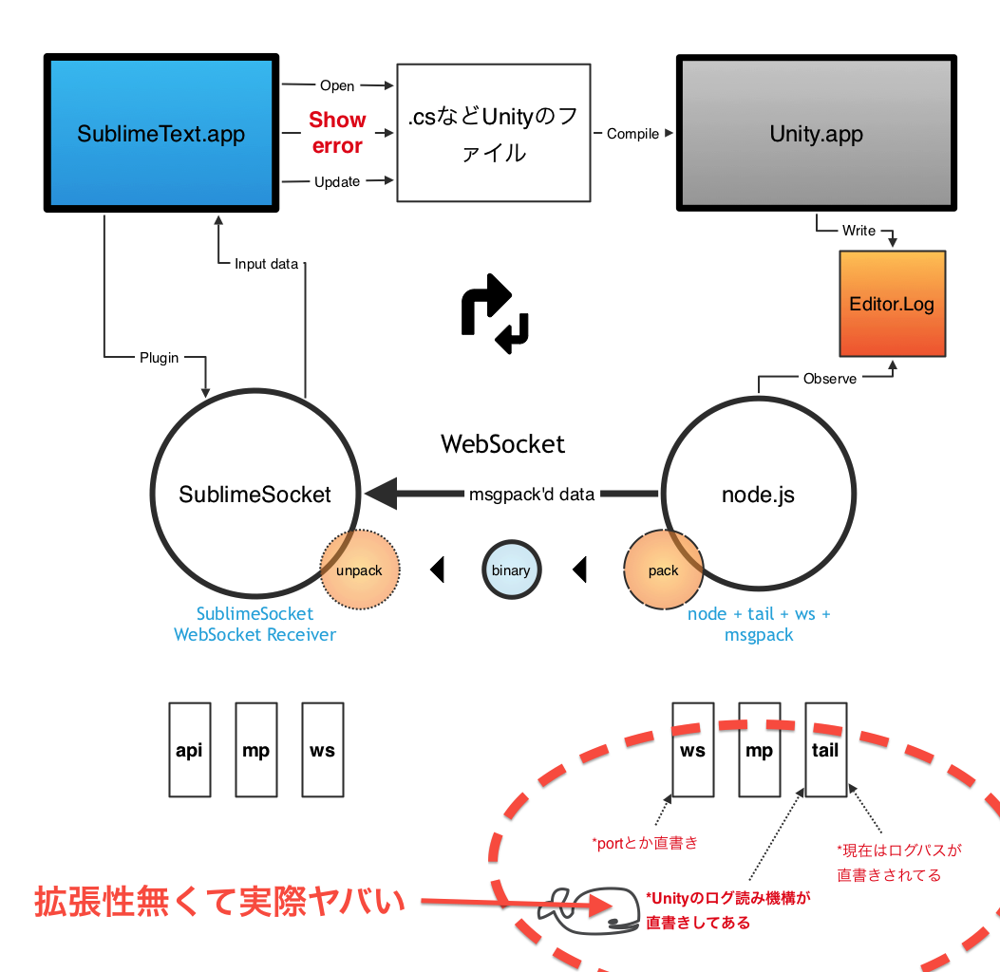

pyhackでSublimeSocketのUnity用フィルタ書いた
概要
pyhack
http://connpass.com/event/1729/
に参加して、俺俺SublimeText(ST)プラグイン SublimeSocket(SS)について、
STへと送り込むログへのフックをプログラマブルにしたくて、機構を改修した。
ついでにUnity適応用のフィルタを書いた。
ムービー
とった。
UnityのファイルをSTで開いて、エラー行が表示されるまで。
http://www.youtube.com/watch?v=OQHSPJDNDug
(0:18)
STが落ちたみたいに見える瞬間があるけど、Unityが.csファイルの監視をちゃんとやってくれないタイミングがあって、
開き直すとファイル監視がオンになり、保存時にコンパイルが走るようになる。Unityの監視が妙？ それともSTがキャッシュを開いているか。
(0:45)
SSプラグインのフォルダの中に、tool/nodeTailSocket/node node_tailsocket.jsがあり、それを起動している。
(1:25)
途中、エラーにも関わらず表示が変わらないように見えるのは、クラス定義の時点でエラー出ててUnityがコンパイルあきらめてるため。
改修点
下の図の、nodeの部分にあった直書きしちゃってる問題点(過去記事参照)を解決して、プログラマブルにした。
---------------------------------------------------------------------------------------------------------------------------------------------------------------------------------------------------------------------------------------------------------------------

---------------------------------------------------------------------------------------------------------------------------------------------------------------------------------------------------------------------------------------------------------------------
以前は、nodeのtailの中に、直に「Unityからのログを解釈してSublimeのAPIを叩く機構」が書き込まれていて、
例えば他の物(TypeScriptとかScalaとか)に使ったりとかする時にしんどかった。
機構としては、
Unityがなんかエラーログ吐く → nodeがそれをtail → wsでSTへ発射 → SSがそれを受ける → 解析 → STのビューへと反映 → 編集 →...
というのができれば良かったので、量や負荷なんてたがが知れてるし、node側からは全部送って、SS側で内容を振り分ける、という風にした。
ただし、今後、複数プロセスからSSに対しての内容を受ける、という予定があるので、
node側から送り込むとき、ifとか判別はないけどプロトコルは特定の物を使う、という形にした。
USAGE
まだ複雑な、複数の行程になってしまっている。今後楽にする。 nodeの起動とかはやめられる筈。
・Unity起動
・Unityからファイルを開く際のエディタ設定をSTにしておく
・STでファイルを開いたら、SublimeSocket起動
・nodetail+socket起動、フィルタ適応
あとはファイルを編集すると、Unityのコンパイルが走って、ST上にエラーが表示される。
SublimeTextに、SublimeSocketのインストール
下記から。
3系出てからpackageControlに登録しようと思う。
https://github.com/sassembla/SublimeSocket/tree/unity
実際のコードとしくみ
大きく分けて、
0.SSの起動
1.nodeを起動、SSへのフィルタの定義
2.nodeからのログの流し込み
の3工程になっている。
0.SSの起動
省略。
1.nodeを起動、SSへのフィルタ定義のセット
あらかじめフィルタをセットしておく or nodeからフィルタをセットされる必要がある。
今回は、WebSocket開通時にnode側からフィルタを送っている。 以下がUnity用フィルタの全文。
ws.on('open', function() {
console.log("OPENED");
var json =
{
"name": "unity",
"patterns": [
{
".ts.*[(]([0-9].*?),.*:(.*)": {
"runnable": {
"showLine": {
"line": "groups[1]",
"message": "groups[2]"
}
}
}
},
{
"Compilation failed:(.*)": {
"runnable": {
"showStatusMessage": {
"message":"groups[0]"
}
}
}
},
{
"(^Mono: successfully reloaded assembly)": {
"runnable": {
"showStatusMessage": {
"message":"groups[0]"
}
}
}
}
]
};
ws.send("ss@defineFilter:"+JSON.stringify(json));
});
これで、
unityというフィルタ名で、正規表現と、そのパラメータを使って動く関連性を、SS上に定義できる。
上記は正規表現のマッチがあるとき、showLine関数とかを実行する。
たとえば
Assets/NewBehaviourScript.cs(6,12): error CS8025: Parsing error
みたいな文字列が送り込まれてきたとき、
正規表現からパラメータを受け取り、置換したパラメータを使う事が出来る。
上の例でいうと、パターン通過後、SS内で実行されるのは、
ss@showLine:
{
"line": "6",
"message": "Parsing error"
}
になる。今はまだMessageどこにも出ないんだけどさ。
2.nodeからのログの流し込み
フィルタ名とソースがJSONで渡せればOK。
こんな感じ。
ss@detectView+filtering:
{
"name": "unity",
"source": "Assets/NewBehaviourScript.cs(6,12): error CS8025: Parsing error"
}
これで、unityという名前で登録してあったフィルタに対して、
sourceが送られ、
対象のviewがどれなのかセットされ(該当が無い場合は直前のものが流用される)
そのビューの指定行に指定コメントを出す、というのが可能になる。
ちなみにエラーとかの対象のビューがSTに展開されてない場合とかは特に考えてない。
StatusBarか、このファイルがヤベーとかSideBarやDialog出せば良いのでは。
そういうAPIはないけど、STのAPIが任意に実行できるEvalは積んであるので、やろうと思ったら出来る筈。
もし~だったら、とか、そのへんのifはどうするかなー。まだ困ってないからいいや。
使っててだんだん目立つようになってきたけど、フィルタを入力可能にしたことで、エディタ連携が凄く楽になった。
次はマウスオーバーでの注釈とか、リフレッシュ、候補のぶち込みを考える。